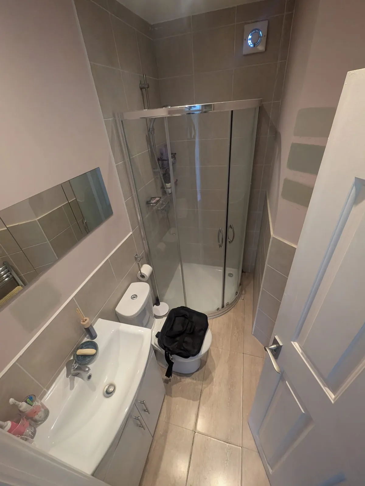
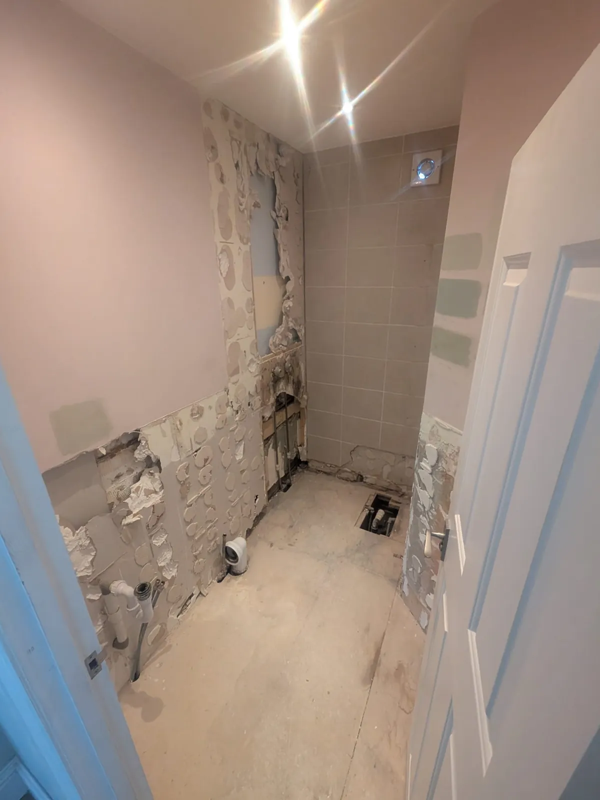
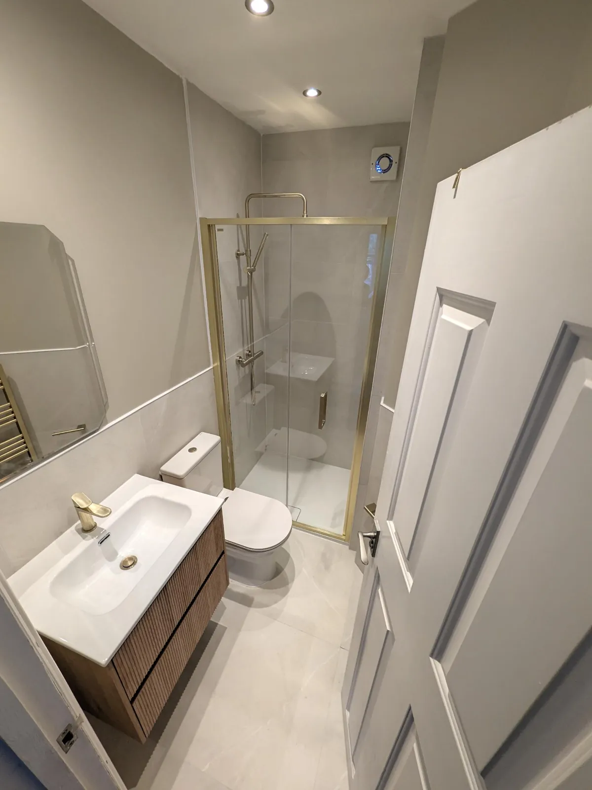

COMPLETE BATHROOM RENOVATIONS
A full bathroom renovation, planned before the old room comes out.
We manage complete bathroom projects across London from survey and practical planning through rip-out, first fix, waterproofing, tiling, fitting and handover.
WhatsApp NicholasFrom our shop at 287 Munster Road, Fulham. We also cover Hammersmith, Parsons Green, Chelsea, Kensington, Putney, Wandsworth, Chiswick, Richmond, Wimbledon and more. All areas




BeforeStrip-outAfterOne of our bathrooms
A dated quadrant shower room taken back to the walls and floor and rebuilt as a warm, modern shower room. Once the old tiles came off, the stud wall behind them needed replacing.
- Old enclosure, tiles and fittings stripped out, and the floor opened to rework the waste and supply pipework.
- Failed studwork found behind the old tiles replaced with new studs, then boarded and waterproofed before tiling.
- A new return wall built to form the shower area, with a slimline tray, brushed-brass framed sliding door and thermostatic rainfall shower.
- Large-format porcelain to the floor and half-height walls, with a fluted wood vanity, new WC and brass towel rail.
What we plan for
A bathroom can look simple when it is finished, but the quality of the result depends on the work behind the tiles: substrate condition, pipe routes, drainage, floor levels, waterproofing, ventilation, electrics and whether the products genuinely fit the room.
Our role is to bring those decisions together before the installation starts, then manage the agreed scope as one project rather than leaving you to coordinate separate trades around a product list.
Rip-out and disposal of the existing bathroom where included in the quoteFirst-fix plumbing, drainage and necessary service alterationsWall and floor preparation, waterproofing and tilingSanitaryware, brassware, heating, lighting and final fittingsTesting, finishing and handoverThe survey
We do not want the first surprise to happen after the room has been stripped out. The survey is used to understand the property as well as the finish you want.
Room
Dimensions & layout
We measure the room and look at doors, windows, clearances, access and whether moving fittings will genuinely improve the space.
Services
Water & drainage
Existing pipework, soil position, waste falls, hot-water provision, pressure and flow all influence the products and layout.
Condition
Walls & floors
Where visible, we assess likely preparation requirements and explain that hidden defects can only be confirmed once existing finishes are removed.
Wet areas
Waterproofing
Shower and other wet areas need the right background and waterproofing approach before tiles and final finishes are installed.
Products
Fit & compatibility
We check key dimensions and installation requirements rather than assuming every bath, screen, vanity or shower will work together.
Property
Access & logistics
Stairs, flats, parking, working restrictions, waste removal and delivery access can all affect how a London bathroom is sequenced.
Types of bathroom work
The scope is shaped around the existing room and what you actually want to improve.
Full renovation
Complete bathroom replacement
Strip the existing room, prepare it properly and install the new bathroom as one coordinated project.
Layout
Reconfigured bathrooms
Move or change fittings where the improvement justifies the extra drainage, pipework and preparation involved.
Shower room
Shower-led layouts
Plan walk-in or enclosed shower rooms around tray size, screen clearances, drainage, water pressure and floor levels.
Bath-to-shower planningTraditional or modern
Bathrooms built around your style
Traditional panelling and brassware, contemporary large-format finishes or a simpler practical scheme can all work when the technical plan underneath is sound.
During the work
Every project differs, but a complete renovation normally follows a clear order so one stage does not undermine the next.
1
Protect & rip out
Protect agreed access areas, isolate services where required and remove the old bathroom to expose the working room.
2
Inspect & prepare
Check what was hidden behind the old finishes and deal with agreed substrate, floor or structural preparation before closing it back up.
3
First fix
Run or alter hot, cold, soil and waste pipework together with the agreed electrical, ventilation and heating provisions.
4
Waterproof & tile
Prepare the backgrounds, waterproof the wet areas and install the agreed wall and floor finishes.
5
Second fix
Install sanitaryware, brassware, shower fittings, screens, furniture, heating and the remaining final components.
6
Finish & test
Complete seals and finishing details, test the room and carry out the final handover checks.
See the full project processChoosing fittings
You do not have to buy a pre-selected bathroom package from us. Bring the products you like and we can help check whether they suit the measured room and installation.
Bath size checked against the actual wall-to-wall space and service requirementsShower trays and screens checked for opening, adjustment and usable accessVanities and basins checked for projection, tap compatibility and door clearancesToilets checked against waste position, projection and cistern requirementsShower performance considered against the existing hot-water system and pressurePlanning
A proper quotation follows the survey and the agreed scope. These figures are guides, not an online fixed price.
Budget guide
Complete bathrooms from around £9,000+
That is our broad current planning starting point for complete London bathroom renovations. Product specification, preparation, tiling, access, layout changes and hidden condition can increase the final cost.
See the full price guideProgramme
Often around 7–10 working days for a straightforward project
Larger rooms, structural work, extensive preparation, specialist finishes, drying requirements or delayed products can extend the programme. Your quotation and pre-start discussion set out the expected route for the actual job.
Our shop at 287 Munster Road
You can visit our street-facing Fulham shop/consultation base to discuss a project, show us products and photographs, or arrange a home survey. We work across London and consider suitable larger planned projects further into the South East.
287 Munster Road, Fulham, London SW6 6BW0207 386 0000WhatsApp photographs, postcode and a short description before the surveyOne clear point of responsibility for the planned bathroom projectFrequently asked questions
What is included in a full bathroom renovation?
The exact quote controls the scope, but a complete project can include rip-out, waste removal, preparation, first-fix plumbing, drainage alterations, electrical work, waterproofing, tiling, sanitaryware, brassware, heating, final fitting and making good.
How much should I budget?
Our current broad guide starts complete London bathroom renovations from around £9,000. The room condition, product level, tiling, access and layout changes can move the final price substantially, so we survey before giving a proper quotation.
How long will the room be out of use?
Many straightforward complete projects can be planned around roughly 7–10 working days on site. More extensive preparation, structural work, specialist finishes and product delays can extend that.
Can you move the toilet, bath or shower?
Often, but not every move is worth doing. We assess the soil and waste routes, floor construction, service access and the actual benefit to the layout before recommending a change.
Can I buy my own products?
Yes. We can work with products you have chosen, but we strongly recommend checking dimensions and compatibility before you order them. The quotation will state what is supplied by us, what is an allowance and what is customer supplied.
What if you find bad walls or floors after rip-out?
Existing finishes can hide defects that cannot be confirmed at survey stage. We identify what we reasonably can beforehand, then explain any genuinely unforeseen additional work if the strip-out exposes something outside the agreed scope.
Recent projects: Lille Road, Fulham · Steam cabin to walk-in shower · Rosaline Road, Fulham · Bedroom en-suite · Kitchen in a full renovation · Full renovation